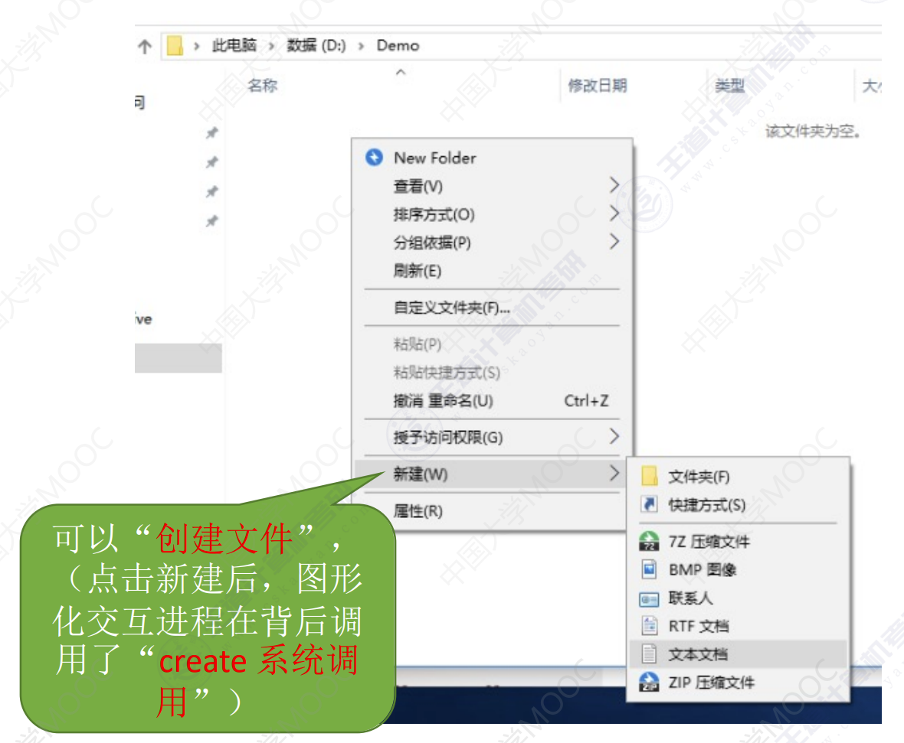
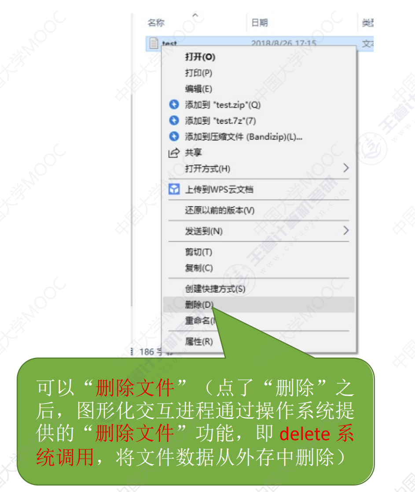
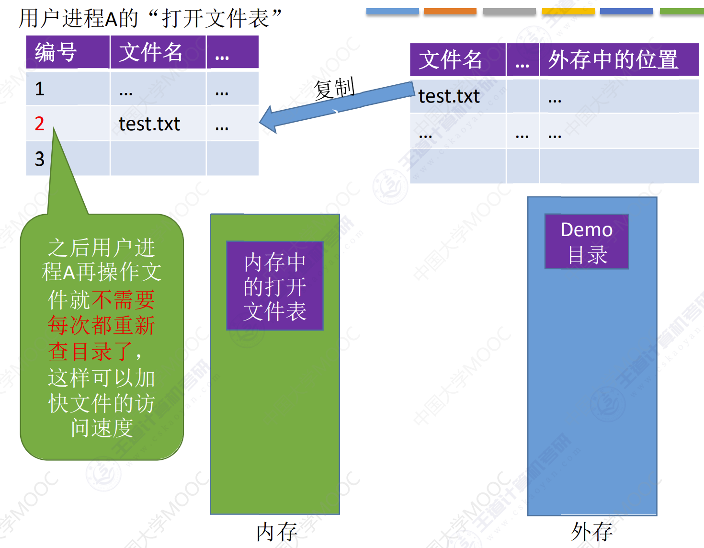
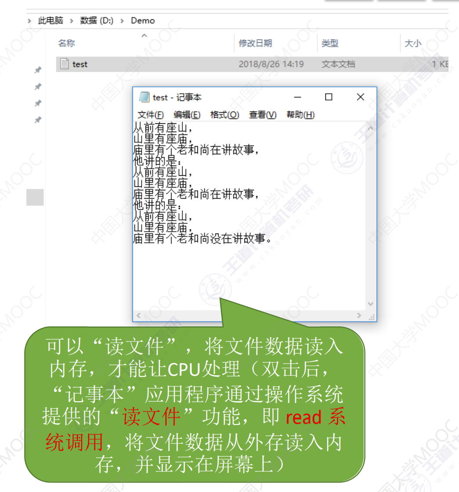

文件功能
文件功能
文件操作
创建文件
进行Create系统调用时，主要做了两件事：
- 在外存中找到文件所需的空间
- 根据文件存放的路径信息找到该文件，在目录中创建该文件对应的目录项。目录项中包含了文件名。文件在外存中的存放位置信息。
删除文件
进行Delete系统调用时，需要提供的几个主要参数
- 文件存放路径
- 文件名
进行Delete系统调用时，主要做了两件事：
- 根据文件存放路径找到相应的目录文件，从目录中找到文件名对应的目录项。
- 根据该目录记录的文件在外存的存放位置、文件大小信息，回收文件占用的磁盘块。位图法等管理策略的不同，需要做不同的处理。
- 从目录表中删除文件对应的目录项。
打开文件
在很多操作系统中，在对文件进行操作之前，要求用户先使用 open 系统调用打开文件，需要提供的几个主要参数：
- 文件存放路径（“D:/Demo”）
- 文件名（“test.txt”）
- 要对文件的操作类型（如：r 只读；rw 读写等）
操作系统在处理 open 系统调用时，主要做了几件事：
- 根据文件存放路径找到相应的目录文件，从目录中找到文件名对应的的目录项，并检查该用户是否有指定的操作权限。
- 将目录项复制到内存中的打开文件表中。并将对应表目的编号返回给用户。之后用户使用打开文件内存 外存 表的编号来指明要操作的文件。
之后用户进程A再操作文件就不需要每次都重新查目录了，这样可以加快文件的访问速度

关闭文件
进程使用完文件后，要关闭文件操作系统在处理 Close 系统调用时，主要做了几件事：
- 将进程的打开文件表相应表项删除
- 回收分配给该文件的内存空间等资源
- 系统打开文件表的打开计数器
count减1，若count = 0，则删除对应表项。

读文件
进程使用 read 系统调用完成写操作。
- 需要指明是哪个文件（在支持“打开文件”操作的系统中，只需要提供文件在打开文件表中的索引号即可）。
- 还需要指明要读入多少数据（如：读入 1KB）、指明读入的数据要放在内存中的什么位置。
操作系统在处理 read 系统调用时，会从读指针指向的外存中，将用户指定大小的数据读入用户指定的内存区域中。
文件共享
基于索引节点的共享方式（硬链接）
索引结点：是一种文件目录瘦身策略。由于检索文件时只需用到文件名，因此可以将除了文件名之外的其他信息放到索引结点中。这样目录项就只需要包含文件名、索引结点指针。

索引结点中设置一个链接计数变量 count，用于表示链接到本索引结点上的用户目录项数。
- 若
count = 2，说明此时有两个用户目录项链接到该索引结点上，或者说是有两个用户在共享此文件。若某个用户决定删除该文件，则只是要把用户目录中与该文件对应的目录项删除，且索引结点的count值减1。 - 若
count > 0，说明还有别的用户要使用该文件，暂时不能把文件数据删除，否则会导致指针悬空。 - 当
count = 0时系统负责删除文件。
基于符号链的共享方式（硬链接）

当 User3 访问“ccc”时，操作系统判断文件“ccc”属于 Link 类型文件，于是会根据其中记录的路径层层查找目录，最终找到 User1 的目录表中的“aaa”表项，于是就找到了文件1的索引结点。
文件保护
口令保护
为文件设置一个口令，用户请求访问该文件时必须提供口令。
口令一般存放在文件对应的 FCB 或索引结点中。用户访问文件前需要先输入“口令”，操作系统会将用户提供的口令与 FCB 中存储的口令进行对比，如果正确，则允许该用户访问文件
- 优点：保存口令的空间开销不多，验证口令的时间开销也很小。
- 缺点：正确的“口令”存放在系统内部，不够安全。
加密保护
使用某个“密码”对文件进行加密，在访问文件时需要提供正确的“密码”才能对文件进行正确的解密。
Eg：一个最简单的加密算法——异或加密假设用于加密/解密的密码为“01001”

- 优点：保密性强，不需要在系统中存储密码
- 缺点：编码/译码，或者说加密/解密要花费一定时间
访问控制
在每个文件的FCB（或索引结点）中增加一个访问控制列表（Access-Control List, ACL），该表中记录了各个用户可以对该文件执行哪些操作。

精简的访问列表：以“组”为单位，标记各“组”用户可以对文件执行哪些操作。
如：分为 系统管理员、文件主、文件主的伙伴、其他用户 几个分组。当某用户想要访问文件时，系统会检查该用户所属的分组是否有相应的访问权限